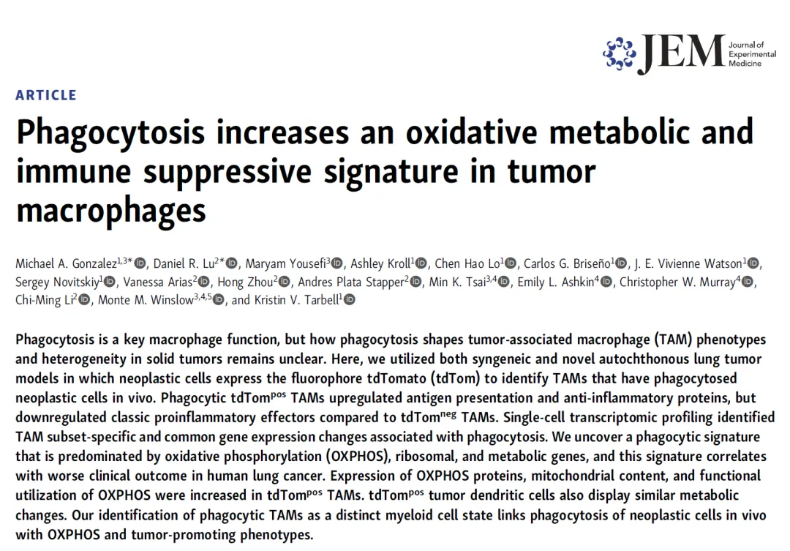
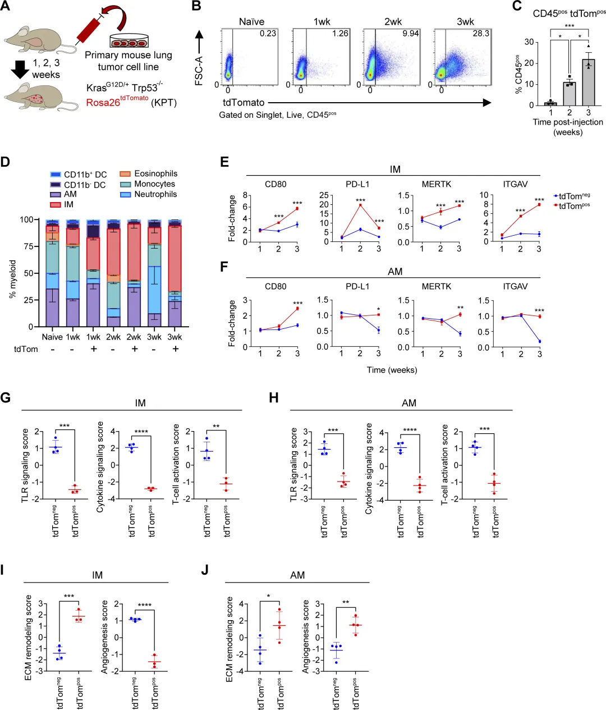
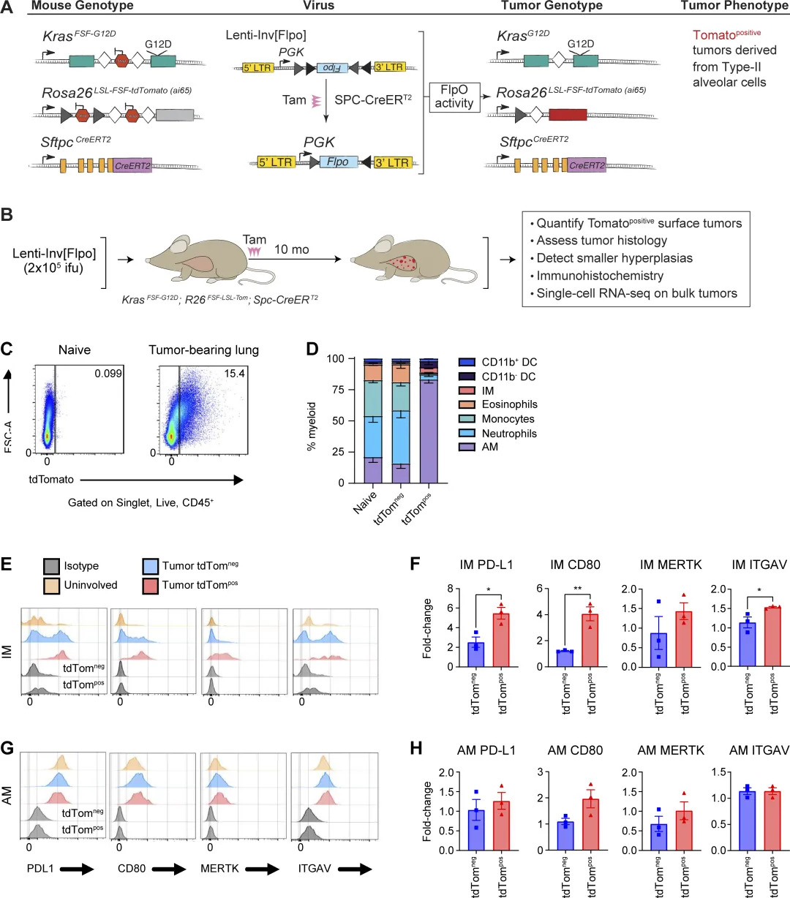
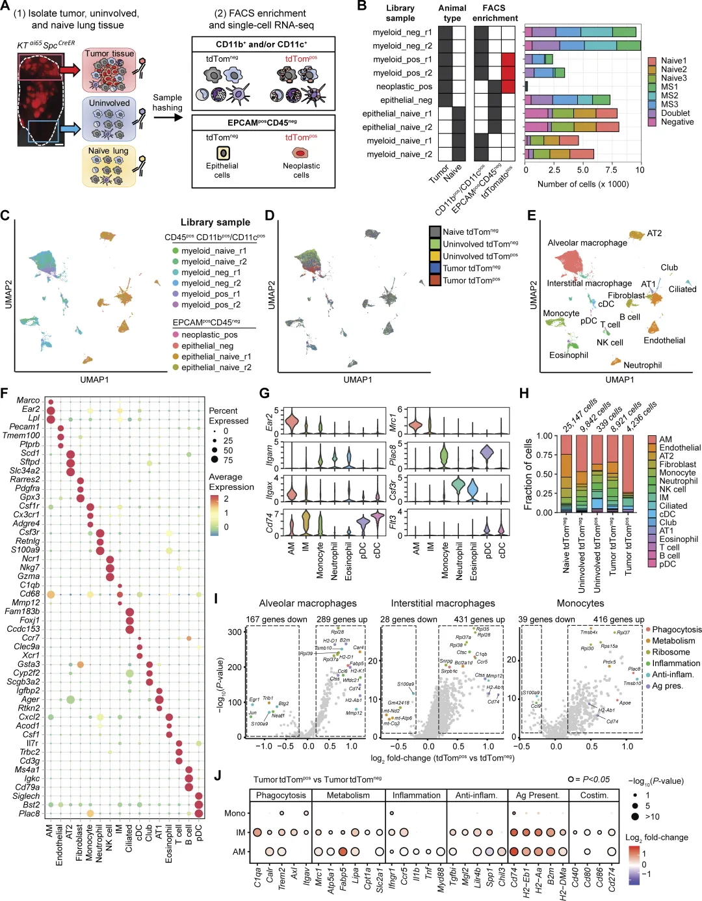
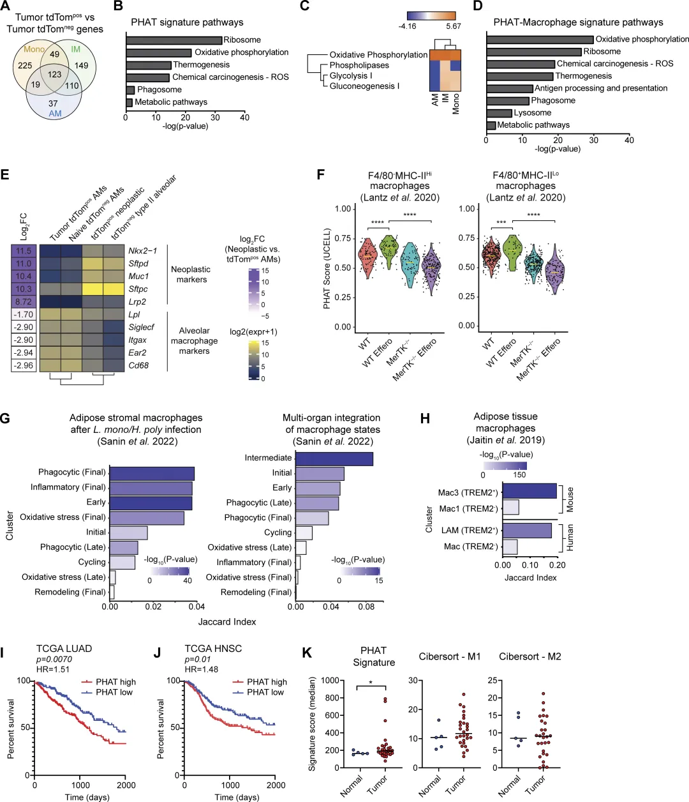
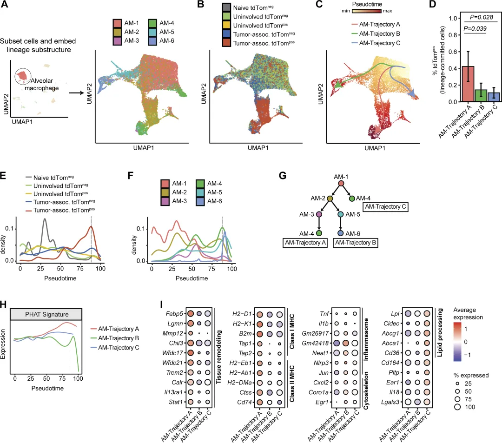
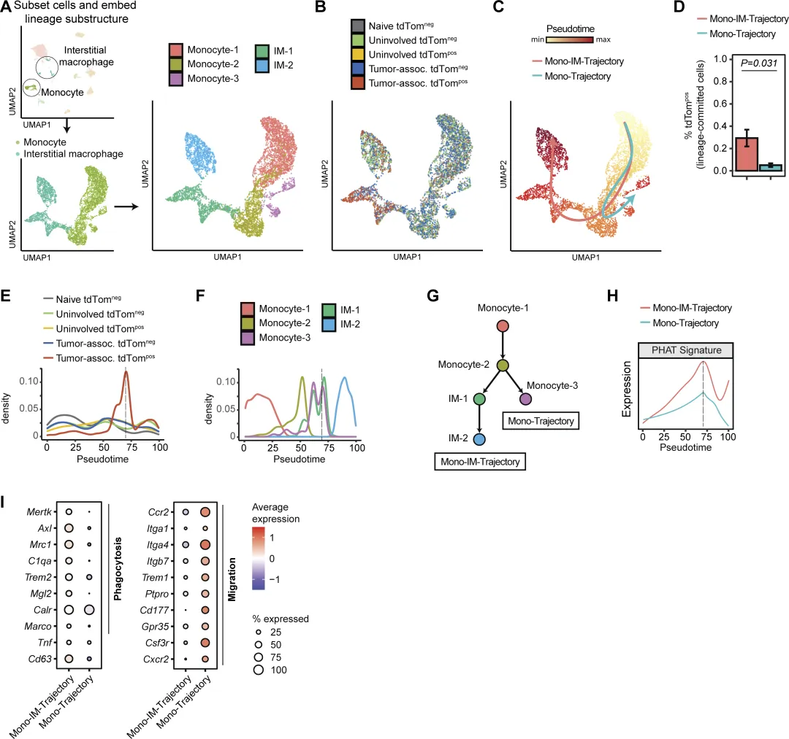
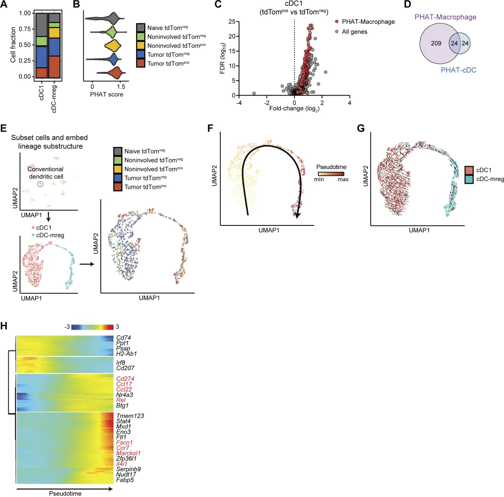
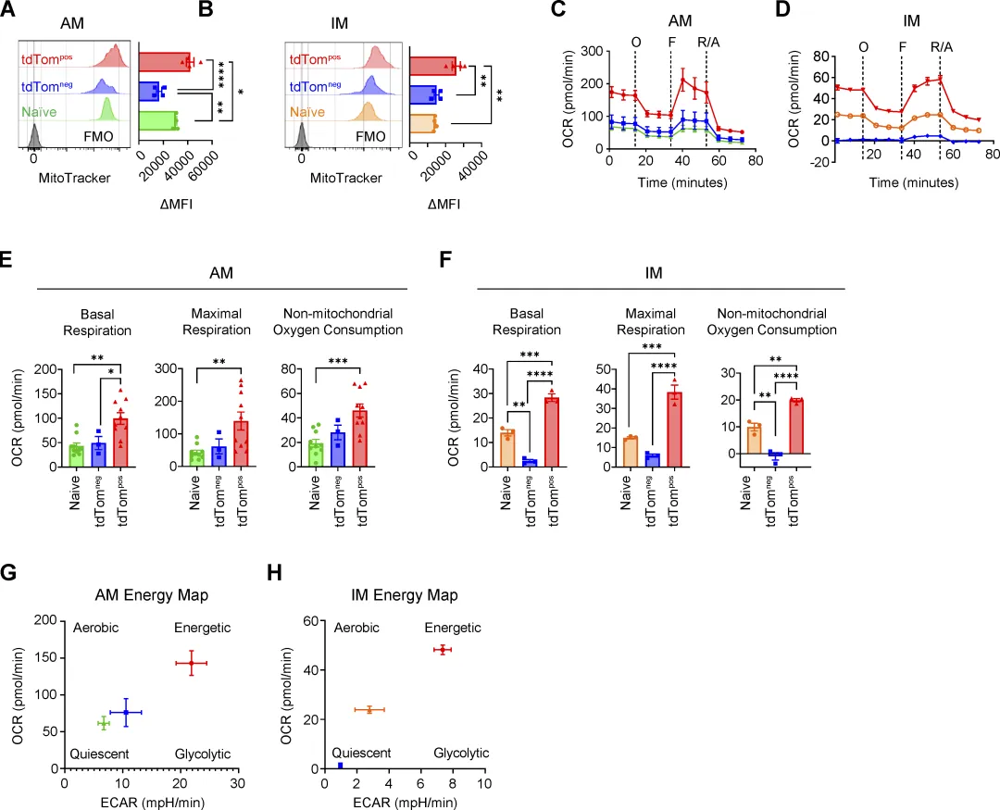
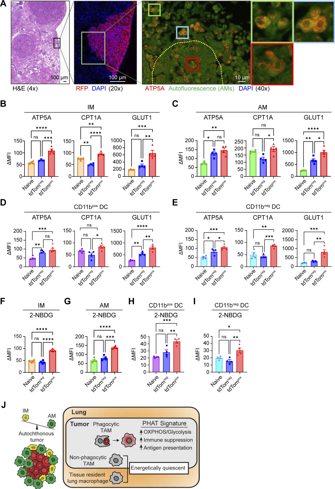

《JEM》解析| 肿瘤中巨噬细胞的氧化代谢和免疫抑制特征
原文：https://mp.weixin.qq.com/s?__biz=MzAwMzIzOTk5OQ==&mid=2247528686&idx=1&sn=b872a0968cf712ea40287f5bd1342a0c&chksm=9b3c09beac4b80a869bf0a40b88e85ae3cff4a0993050f75ba2514792beeeda9417c25f01e27#rd 合集：文献速递
一、写在前面
本次分享的是《JEM》（IF=13.214）的文章****，**** 感兴趣的同学可以看看原文：MichaelA. Gonzalez, Daniel R. Lu, Marvam Yousefi,et al."Phagocytosis increases an oxidative metabolic and immune suppressive signature in tumor macrophages" ，JEM,

文章摘要：
吞噬作用是巨噬细胞的一项关键功能，但吞噬作用如何塑造实体瘤中的肿瘤相关巨噬细胞 (TAM) 表型和异质性仍不清楚。在这里，作者利用同源和新型的本土肺癌模型（其中肿瘤细胞表达荧光团 tdTomato (tdTom)）来识别在体内吞噬肿瘤细胞的 TAM。与 tdTom neg TAM 相比，吞噬性 tdTom pos TAM 上调了抗原呈递和抗炎蛋白，但下调了经典促炎效应物。单细胞转录组分析确定了与吞噬作用相关的 TAM 亚群特异性和常见基因表达变化。作者发现了一种以氧化磷酸化 (OXPHOS)、核糖体和代谢基因为主的吞噬特征，这种特征与人类肺癌的临床结果较差有关。 tdTom pos TAM中 OXPHOS 蛋白的表达、线粒体含量和 OXPHOS 的功能利用均有所增加。tdTom pos肿瘤树突状细胞也表现出类似的代谢变化。作者将吞噬性 TAM 鉴定为一种独特的髓系细胞状态，将体内肿瘤细胞的吞噬作用与 OXPHOS 和促肿瘤表型联系起来。
文章复现：我们复现了其中的主要图图表(复现过程可见：代码复现|吞噬作用增强肿瘤中巨噬细胞的氧化代谢和免疫抑制特征)，我们重在复现思路流程的代码 ，主要工作为细胞UMAP降维、细胞比例、Marker气泡图以及巨噬细胞亚群、拟时序分析、富集分析。由于版本环境和随机数等问题，我们并不能保证复现结果100%与原文一致，大家可以参考原文集锦：
以及我们的代码复现集锦
 如果需要数据分析指导 、生信热点全文复现 、自测数据个性化分析 辅导，欢迎联系客服微信[Biomamba_zhushou]
如果需要数据分析指导 、生信热点全文复现 、自测数据个性化分析 辅导，欢迎联系客服微信[Biomamba_zhushou]
已有生信基地联系方式的同学无需重复添加

二、主要内容
1.在同基因移植肺肿瘤模型中，吞噬性 TAM 与非吞噬性 TAM 具有不同的表型
通过静脉注射 KPT 细胞建立同基因移植肺肿瘤模型（图 1A）。流式细胞术分析显示，CD45⁺ tdTom⁺ 免疫细胞的比例随时间显著增加，表明肿瘤相关巨噬细胞（TAM）持续吞噬肿瘤细胞（图 1B, C）。进一步分析发现，在 tdTom⁺ CD45⁺ 髓系细胞中，IM（CD11b⁺ 巨噬细胞）占比最高，与既往研究结果一致（图 1D）。吞噬性巨噬细胞（tdTom⁺）在 AM（肺泡巨噬细胞）和 IM（间质巨噬细胞）中均表现出免疫表型的动态变化。吞噬性 IM 在移植后 2 周和 3 周时 PD-L1 表达水平显著高于非吞噬性 IM，而 AM 中 PD-L1 表达呈相反趋势（图 1E, F）。此外，吞噬性 IM 和 AM 均上调吞噬相关受体 MERTK 和 ITGAV，进一步支持吞噬作用诱导特定免疫调节状态的假设（图 1E, F）。通过 Nanostring mRNA 探针分析，发现吞噬性 IM 和 AM 具有不同的转录特征。吞噬性 IM 下调与 TLR 信号传导、细胞因子信号和 T 细胞活化相关的基因（图 1G, H），同时上调与细胞外基质（ECM）重塑相关的基因，并降低血管生成相关基因的表达（图 1I）。相比之下，吞噬性 AM 在 ECM 重塑和血管生成通路中均表现出上调趋势（图 1J）。这些结果表明，吞噬肿瘤细胞可诱导 TAM 在不同亚群间形成特异性功能分化。

图 1(2)组织驻留 AM 是原发性肺癌肿瘤中最常见的吞噬细胞
构建了一种新型 KTai65;SpcCreER 小鼠模型，该模型特异性地诱导 II 型肺泡细胞中的致癌性 KRAS 表达及 tdTomato 荧光标记（图 2A）。在肿瘤形成 9 个月后，该模型表现出大量 tdTomato 阳性肺肿瘤，并可通过流式细胞术检测到吞噬性 tdTompos 髓系细胞（图 2B）。这一现象与细胞移植模型观察到的吞噬特征相一致。通过流式细胞术分析 KTai65; SpcCreER 肿瘤中的髓系细胞类型，发现 AM 在 tdTompos 吞噬性细胞群体中占比最高（70%），而 IM 仅占 3%（图 2D）。这一结果与同基因移植模型形成对比，后者在肺癌生长 3 周内 IM 贡献 25-50% 的吞噬细胞（图 1D）。在 KTai65; SpcCreER 肿瘤模型中，吞噬性 AM 和 IM 细胞表面 PD-L1、CD80、MERTK 和 ITGAV 的表达趋势与同基因移植模型相似（图 2E-H）。然而，与 KTai65; SpcCreER 小鼠相比，同基因肿瘤模型的 IM 具有更大的倍数变化。此外，KTai65; SpcCreER 肿瘤中的吞噬性 AM 表型与同基因肿瘤移植 2 周后的 AM 最为相似，表明肿瘤微环境可能影响 AM 的吞噬活性。

图 2(3)肿瘤细胞的吞噬作用在单核细胞和巨噬细胞中留下了不同的转录模式
研究者利用单细胞RNA测序（scRNA-seq）分析了KT ai65；Spc CreER肿瘤小鼠的肺组织，包括肿瘤组织、未受累组织以及健康小鼠的肺组织。通过显微切割及FACS分选，获得tdTom⁺和tdTom⁻髓系细胞（CD45⁺ CD11b⁺/CD11c⁺）及CD45⁻EPCAM⁺非免疫细胞，并采用寡核苷酸标签进行细胞多重化（图3A）。经过质量控制后，共获得44,016个高质量单细胞转录组，并成功分配组织和动物身份（图3C-E）。基于聚类分析，确定了33种细胞状态，归为16种主要细胞类型（图3F），其中7种髓系细胞类型存在于所有组织，但AM、IM、单核细胞和DC在肿瘤来源的tdTom⁺髓系细胞中富集（图3G-H）。差异表达分析显示，肿瘤相关的tdTom⁺单核细胞、IM和AM相比tdTom⁻对应物在吞噬、代谢和共刺激基因方面普遍上调（图3I-J）。其中，IM特异性上调Axl、Cpt1a和Cd40；AM和IM中抗原呈递相关基因上调，而单核细胞未见此变化。此外，炎症介质（Il1b、Tnf）和组织修复因子（Mgl2、Chil3）在不同细胞类型中表现出差异表达。这表明肿瘤细胞吞噬作用诱导了IM、AM和单核细胞中既保守又特异的转录变化。

图 3(4)PHAT 基因特征与 OXPHOS 代谢和翻译相关
研究者分析了AM、IM和单核细胞中肿瘤细胞吞噬诱导的转录变化，识别出123个共同上调基因，定义为PHAT特征（图4A）。KEGG通路分析显示，PHAT特征显著富集于核糖体翻译、OXPHOS、吞噬体和代谢途径（图4B）。此外，Ingenuity通路分析表明，tdTom⁺巨噬细胞和单核细胞中OXPHOS、磷脂酶、糖酵解和糖异生代谢途径共同激活（图4C）。进一步筛选出233个特异于巨噬细胞的PHAT-巨噬细胞特征，额外富集于抗原加工/呈递及溶酶体途径（图4D）。为确定PHAT基因来源，研究者对tdTom⁺AM及tdTom⁺肿瘤细胞进行RNA测序，发现AM中的II型肺泡细胞/肿瘤细胞标志基因表达极低（图4E），表明PHAT特征主要由吞噬细胞表达。进一步分析发现，PHAT特征与小鼠和人类多种吞噬相关巨噬细胞亚群共享（图4F-H）。在TCGA数据集中，LUAD及HNSC患者中PHAT特征富集与较差的生存率相关（图4I-J）。此外，PHAT特征在肿瘤来源的髓系细胞中显著富集，而M1/M2特征未显示明显差异（图4K）。为了进一步验证PHAT特征的功能和保守性，研究者将该特征与不同环境下的巨噬细胞异质性进行了比较。一项研究通过使用MerTK −/−小鼠模型，跟踪了与凋亡细胞共培养后腹膜巨噬细胞的基因表达变化，结果显示在吞噬巨噬细胞中，PHAT特征显著上调，且MerTK −/−巨噬细胞的PHAT评分明显降低（图4F）。另一项研究关注了单核细胞衍生巨噬细胞在炎症状态下的异质性，定义了“吞噬细胞”群体，结果发现PHAT-IM特征在这些群体中显著富集，且其他不同标记群体也显示出类似富集（图4G）。这些结果表明，尽管某些途径在不同环境下有所保守，但肿瘤微环境可能驱动吞噬巨噬细胞激活状态类似于其他炎症环境。此外，PHAT-IM特征在富含脂质的Trem2⁺巨噬细胞群体中也高度富集，且与脂质含量低的巨噬细胞相比表现出差异（图4H）。流式细胞术数据进一步支持这一观察，显示原生肺肿瘤中的tdTom⁺ AM和IM中TREM2表达上升（图S2）。这些比较表明，TAM中的基因表达变化也在其他非肿瘤环境中存在，但吞噬作用、组织环境和炎症状态对巨噬细胞的影响具有独特机制。为了探索PHAT特征在临床中的应用，研究者查询了癌症基因组图谱(TCGA)中的批量基因表达数据，特别关注吞噬性TAM的免疫抑制表型。研究假设PHAT特征可能与临床预后呈负相关，结果表明PHAT特征能够对肺腺癌患者进行有效分层，肿瘤富含PHAT特征的患者生存率显著降低（图4I）。虽然乳腺癌、肝细胞癌和结肠腺癌患者的生存率与PHAT特征略微相关，但PHAT特征在头颈部鳞状细胞癌患者中的生存率分层效果尤为显著（图4J及未显示的数据）。这些数据表明，尽管不同肿瘤环境存在差异，但某些分子特征在多种肿瘤中是共享的。为进一步探索PHAT特征在人类癌症TAM中的表现，研究者分析了来自非小细胞肺癌患者的肿瘤和正常肺组织中的髓系细胞数据。结果表明，PHAT特征在肿瘤相关髓系细胞中显著富集（图4K），而与经典的M1和M2髓系基因特征相比，这些特征在肿瘤相关髓系细胞中没有显著富集。这些发现表明，鼠源PHAT特征与人类肿瘤髓系群体的基因表达密切相关，并将小鼠模型中吞噬性单核细胞和巨噬细胞的转录变化与临床预后进行了关联。

图 4(5)将 PHAT 特征与其他体内巨噬细胞数据集进行比较，可显示出保守和依赖环境的吞噬巨噬细胞状态
研究通过扩散图嵌入分析了AM细胞状态的局部成熟关系，结果显示来自未受累组织和肿瘤的幼稚和tdTom neg AM与肿瘤相关的tdTom pos AM分开分组，强调了肿瘤细胞吞噬作用驱动的独特转录状态（图5B）。此外，AM轨迹推断显示了AM细胞的三条成熟轨迹：AM轨迹A、B、C（图5C）。大多数肿瘤相关的tdTom pos AM位于AM轨迹A中的成熟连续体较晚位置（图5D和5E）。在AM轨迹的伪时间分布中，AM轨迹A中的细胞具有最高的PHAT特征基因表达（图5H）。与AM轨迹B和C相比，轨迹A的细胞表达了较高的组织重塑基因（如Fabp5、Lgmn、Mmp12等）以及M2样基因（如Tgfbi、Chil3等）（图5I和图S4F）。这些结果表明吞噬性AM在肿瘤微环境中通过组织重塑基因和免疫调节基因的表达，展示了独特的成熟谱系。

图 5(6)PHAT 基因特征转化为人类 TAM 和肺癌的临床结果
为了探究吞噬作用如何影响单核细胞和间质巨噬细胞（IM）的功能，研究使用扩散图和轨迹推断分析了这两类细胞的转录变化（图6A和6C）。结果表明，吞噬肿瘤细胞的tdTom pos单核细胞/IM在分化过程中与幼稚组织和未受累组织的细胞分开积累，揭示了吞噬作用驱动的差异转录调控。肿瘤相关的IM可进一步根据补体系统基因（如C1qa和C3ar1）或氧化应激基因（如Ftl1和Mt1）分为两种不同的细胞状态（图S4G）。与单核细胞相比，肿瘤相关tdTom pos单核细胞/IM的比例更高（约80%；图S4H和S4I）。使用Slingshot对这些细胞进行轨迹推断，预测了两条轨迹（Mono-IM-Trajectory和Mono-Trajectory），并按伪时间对细胞进行排序。RNA速度进一步确认了轨迹的方向性（图S4J）。与Mono-Trajectory相比，Mono-IM-Trajectory中包含的tdTom pos细胞百分比明显更高（图6D）。大多数肿瘤相关tdTom pos单核细胞/IM与较晚的伪时间值相关（图6E和6F）。

图 6(7)吞噬性 AM 通过与组织重塑相关的独特谱系成熟
研究表明，在肿瘤相关环境中，树突状细胞（cDC）在吞噬肿瘤细胞后转变为免疫调节树突状细胞（mregDC）样表型。尽管传统树突状细胞（cDC）只占tdTom阳性细胞的一小部分，但mregDC的抗原摄取能力和迁移潜力显著增强。研究发现，肿瘤相关的mregDC中，tdTom阳性细胞的比例几乎是cDC1的两倍（图7A），并且这些细胞具有从肿瘤组织迁移的潜力，表明它们在吞噬肿瘤细胞后能够向肿瘤微环境外迁移。通过分析PHAT基因特征，研究人员发现，与传统cDC相比，mregDC在PHAT特征基因的表达上更为显著，尤其是在cDC1中，这进一步证明了mregDC在吞噬肿瘤细胞后获得了更强的免疫调节功能（图7B和图7C）。此外，PHAT-巨噬细胞特征基因在cDC的表达与单核细胞和巨噬细胞的特征高度重叠，表明这些细胞在肿瘤微环境中可能继承了巨噬细胞的一些功能特征（图7D）。进一步通过伪时间分析推断了从cDC1到mregDC的成熟轨迹，结果显示，cDC1标记物如Ppt1和Irf8逐渐减少，而mregDC标记物如Ccl22、Fscn1和Ccr7逐渐增加。同时，促炎信号介质（例如Stat4和Rel）在这一过程中上调，表明树突状细胞在转变为mregDC后，增强了免疫反应的能力（图7E-G）。这些发现表明，树突状细胞在吞噬肿瘤细胞后不仅获得了新的免疫调节功能，还增强了促炎作用，从而可能在肿瘤免疫反应中发挥重要作用。

图 7(8)吞噬细胞IM与单核细胞不同，吞噬后表现出可塑性
研究显示，在肺肿瘤微环境中，吞噬性肿瘤相关巨噬细胞（TAM）显著增加了线粒体含量、氧消耗和与OXPHOS相关的代谢基因的表达。通过对Adeno-SpcCre肺癌模型中的吞噬性肿瘤相关髓系细胞进行代谢特征分析，发现与未吞噬的AM和IM细胞相比，吞噬性tdTom阳性AM和IM的线粒体含量显著增加，表明线粒体代谢在这些细胞的功能中起着重要作用（图S5A、图8A和8B）。细胞外通量分析显示，吞噬性tdTom阳性AM和IM的基础和最大氧消耗率（OCR）显著提高，表明它们通过氧化磷酸化（OXPHOS）产生ATP（图8C-F）。尽管氧消耗率增加，但备用呼吸能力未见显著差异（图S5B和C）。与幼稚AM和IM相比，吞噬性tdTom阳性AM和IM的糖酵解显著增加，这进一步增强了它们的能量代谢状态（图8G和H）。进一步分析发现，吞噬性TAM中线粒体ATP合酶亚基ATP5A的表达显著增加，表明OXPHOS和脂肪酸氧化在肿瘤微环境中的吞噬性TAM和树突状细胞（DC）中活跃（图9A、B）。METFLOW分析也显示，吞噬性tdTom阳性IM、AM和cDC中，与OXPHOS和糖酵解相关的关键代谢酶如GLUT1、ATP5A和CPT1A的表达明显增加（图9B-E）。这些数据表明，吞噬性TAM和DC的代谢特征发生了显著变化，提示OXPHOS和糖酵解在肿瘤免疫抑制表型和功能中扮演了重要角色（图9J）。通过体外2-NBDG染色，发现吞噬性TAM在糖酵解活性方面显著上调（图9F-I）。

图 9(9)吞噬树突状细胞获得 mregDC 样表型

图 9(10)吞噬性 TAM 增加了线粒体含量、氧消耗和 OXPHOS 相关基因的表达
三、肿瘤免疫微环境
对肿瘤免疫微环境、scRNA-seq分析及联合分析感兴趣的同学可参考：
scRNA-seq数据基础分析手册(2025最新修订) 代码复现|吞噬作用增强肿瘤中巨噬细胞的氧化代谢和免疫抑制特征
《Cancer Cell》|时空单细胞揭示CRC的PD-1治疗免疫细胞动态《Cell》复现|中性粒细胞scRNA-seq图谱阐明抗肿瘤抗原呈递效力代码复现|scRNA-seq绘制透明细胞肾癌的免疫微环境《Nature Communications》| scRNA-seq揭示头颈癌早期转移过程中潜在的免疫逃避机制

如何联系我们

 留一个领取资料、免费两周学习版服务器的微信号[Biomamba_zhushou]，方便各位随时交流。同时我们也构建了交流群矩阵，欢迎大家入群讨论。
大家可以阅读完这几篇之后添加给生信入门初学者的小贴士
如何搜索公众号过往发布内容
留一个领取资料、免费两周学习版服务器的微信号[Biomamba_zhushou]，方便各位随时交流。同时我们也构建了交流群矩阵，欢迎大家入群讨论。
大家可以阅读完这几篇之后添加给生信入门初学者的小贴士
如何搜索公众号过往发布内容
已有生信基地联系方式的同学无需重复添加
 您点的每个赞和在看，我都认真当成了喜欢
您点的每个赞和在看，我都认真当成了喜欢